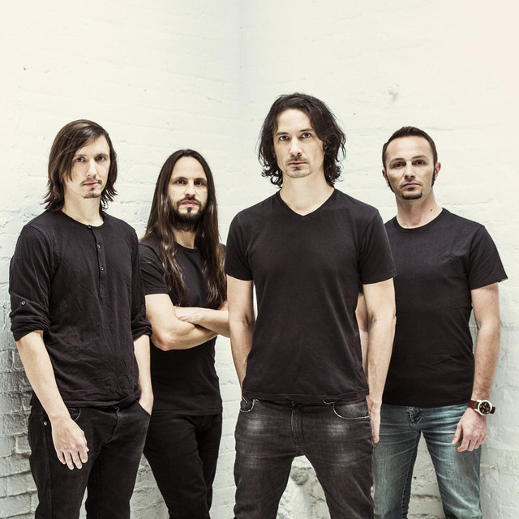

Joe and Mario Duplantier, two brothers aged nineteen and fourteen respectively, decided to start a band based on a technical melodic death metal, and recruited nineteen years old Christian Andreu."A passionate guitarist, like us, of Metallica", said Mario Duplantier. They began practicing together their guitars riffs and drum parts in the Duplantier family garage where the group had quickly set up a studio, in their hometown of Ondres, in the south of the Landes department, at the gates of Bayonne. Soon after, they enlisted bassist Alexandre Cornillon, a friend of Andreu. Joe Duplantier remembered that "We wanted to go fast and strong. We had no plan, no pressure. ... We didn't even have a name". By then, the Duplantier brothers were each playing in their own metal bands that they had started two years previously. Both were already regarded for their abilities.
In 1996, they formed Godzilla. When making a decision on a choice for a band name, the idea came from the original version of the fictional monster Godzilla, filmed in black and white, as they appreciated from the beginning "the myth of the big pissed off atomic lizard. ... It was in our heads a symbol of devastating power". The band's first performance was effectuated four months after the formation, playing in the bars of Bayonne. They would sell cassettes at shows and to their friends. Delivering a straight-ahead death metal with elements of trash metal, Godzilla self-released a pair of demo albums, Victim in 1996, and Possessed in 1997, and began touring in the south west of France. Cornillon left the band in nuary 1998, and was replaced by Jean-Michel Labadie, a "young bass player very active on the Basque scene".